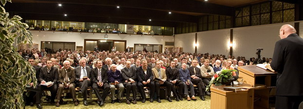
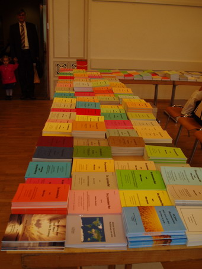

“Jésus-Christ est le même hier, aujourd’hui, et éternellement” (Hébreux 13.8).
LETTRE CIRCULAIRE N° 61
FEVRIER 2007
Chers frères et sœurs, de tout cœur je vous salue tous dans le précieux Nom de notre bien-aimé Seigneur Jésus-Christ avec la parole de Romains 9.24-26:
“Lesquels aussi il a appelés, savoir nous, non seulement d’entre les Juifs, mais aussi d’entre les nations: comme aussi il dit en Osée [2.1]: J’appellerai mon peuple celui qui n’était pas mon peuple, et bien-aimée celle qui n’était pas bien-aimée; et il arrivera que dans le lieu où il leur a été dit: Vous n’êtes pas mon peuple, là ils seront appelés fils du Dieu vivant”.
Avant même la fondation du monde le dessein de Dieu était d’avoir des fils et des filles. Adam était le fils de Dieu créé à l’image de Dieu; le deuxième Adam, Jésus-Christ, le Fils de Dieu engendré par l’Esprit, était l’image de Dieu (2 Cor. 4.4; Héb. 1.3). Dans tout l’Ancien Testament, la naissance du Fils de Dieu est annoncée et au commencement de la Nouvelle Alliance, son accomplissement est manifesté (Mat. 1.18-25; Luc 2.1-14). Dans le Fils, nous sommes tous reçus en tant que fils et filles de Dieu, et nous sommes établis dans notre position initiale: “… nous ayant prédestinés pour nous adopter pour lui par Jésus-Christ, selon le bon plaisir de sa volonté…” (Eph. 1.5). Dans tout ce que Dieu a pensé pour nous dans Son plan de rédemption, Il nous a fait des promesses et tous ceux qui croient véritablement, expérimentent leur accomplissement.
Abraham crut ce que Dieu lui avait promis et il ne se laissa pas tromper par l’incrédulité (Rom. 4.18-28). C’est ainsi qu’il expérimenta finalement l’accomplissement de tout ce qui d’un point de vue humain était irréalisable. Les véritables croyants sont la semence d’Abraham et eux non plus ne se laissent pas tromper par l’incrédulité, car ils sont eux-mêmes des enfants de la promesse. “Or vous, frères, comme Isaac, vous êtes enfants de promesse” (Gal. 4.28).
Les promesses de Dieu demeurent éternellement, elles sont inébranlables; c’est en versant Son Sang que Jésus a scellé ce qu’Il avait d’abord promis dans Sa Parole. Dans toutes les promesses, il y a un absolu, une divine certitude qui ne permet pas au doute de s’établir (2 Cor. 1.20).
C’est à cause de cela que le Seigneur notre Dieu a donné la garantie de ce qu’Il avait promis par un serment. “Car lorsque Dieu fit la promesse à Abraham, puisqu’il n’avait personne de plus grand par qui jurer, il jura par lui-même…”. Le même serment est valable pour nous: “Et Dieu, voulant en cela montrer plus abondamment aux héritiers de la promesse l’immutabilité de son conseil, est intervenu par un serment…” (Héb. 6.13-20). Amen! Amen!
Dieu s’occupe de la réalisation de Son plan de salut, premièrement avec l’Eglise de Jésus-Christ, Ses fils et Ses filles, puis Il s’occupe de Son peuple qu’Il a élu en tant que propriété personnelle. Le Dieu tout-puissant, Elohim, qui déjà dans tout l’Ancien Testament s’est révélé comme l’Eternel/Yahvé et qui en tant que l’Invisible est apparu visiblement, marchant dans le jardin d’Eden, visitant Abraham et parlant aux prophètes, le même Dieu, en dehors duquel ne se trouve aucun autre Dieu, s’est révélé dans le Ciel comme Père, et ici sur la terre en Son Fils seul engendré. “Mais quand l’accomplissement du temps est venu, Dieu a envoyé son Fils, né de femme, né sous la loi, afin qu’il rachetât ceux qui étaient sous la loi, afin que nous reçussions l’adoption” (Gal. 4.4-7).
Encore et toujours, Son plan avec l’humanité nous est présenté: “Car il convenait pour lui, à cause de qui sont toutes choses et par qui sont toutes choses, que, amenant plusieurs fils à la gloire, il consommât le chef de leur salut par des souffrances. Car, et celui qui sanctifie et ceux qui sont sanctifiés sont tous d’un; c’est pourquoi il n’a pas honte de les appeler frères, disant: J’annoncerai ton nom à mes frères; au milieu de l’assemblée je chanterai tes louanges … Et encore: Me voici, moi, et les enfants que Dieu m’a donnés” (Héb. 2.10-18; Ps. 22.23; Es.8.18).
Le modèle pour tous les fils et filles de Dieu destinés à obéir à la volonté de Dieu, est le Fils de Dieu Lui-même, Lequel s’est rendu obéissant jusqu’à la mort, et même jusqu’à la mort de la croix (Phil. 2.5-11). Sur le chemin de la crucifixion, Il lutta dans le jardin de Gethsémané et dit: “Mon âme est saisie de tristesse jusqu’à la mort… il tomba sur sa face, priant et disant: Mon Père, s’il est possible, que cette coupe passe loin de moi; toutefois non pas comme moi je veux, mais comme toi tu veux” (Mat. 26.38,39).
Dans l’Evangile de Marc 14.36, Jésus dit: “Toutefois non pas ce que je veux, moi, mais ce que tu veux, toi”. Une autre fois, Il dit: “… non pas comme moi je veux”, puis: “… pas comme je veux, mais comme tu veux, ce que tu veux qui soit fait…”. Dans Luc 22.42, nous est relaté que notre Seigneur et Sauveur dans l’angoisse du combat s’écria: “Père, si tu voulais faire passer cette coupe loin de moi! Toutefois, que ce ne soit pas ma volonté mais la tienne qui soit faite”. Nous aussi, nous devons placer consciemment notre volonté dans la volonté de Dieu, afin que nous soyons réellement en communion avec Dieu pour marcher dans Son chemin, de sorte que nous soyons trouvés pleinement dans Sa volonté qui est bonne, agréable et parfaite (Rom. 12.1,2). Car seul celui qui fait la volonté de Dieu demeure éternellement (1 Jean 2.17).
Notre Seigneur disait: “Car quiconque fera la volonté de Dieu, celui-là est mon frère, et ma sœur, et ma mère” (Marc 3.31-35). Et il s’agit de ceux qui “… sont nés, non pas de sang, ni de la volonté de la chair, ni de la volonté de l’homme, mais de Dieu” (Jean 1.13).
Lucifer, le fils de l’aurore, déclarant quelle était sa propre volonté, est sorti de la volonté de Dieu, et c’est ainsi qu’il devint l’adversaire et l’ennemi de Dieu. A plusieurs reprises, il dit: “Je monterai aux cieux, j’élèverai mon trône…” “Je veux…”, “Je veux…” (Es. 14.12-14). C’était là son péché, sa chute, et il entraîna une partie du monde des anges à sa suite. Lucifer s’est élevé, voulant être semblable à Dieu. Il est décrit comme: “le fils de perdition, qui s’oppose et s’élève contre tout ce qui est appelé Dieu ou qui est un objet de vénération…” (2 Thess. 2.1-12). Précipité sur la terre, il se rendit au Paradis (jardin d’Eden) et se rendit maître du serpent et par lui, entortilla Eve dans une conversation sur ce que Dieu avait dit. Satan arracha à la volonté de Dieu premièrement Eve puis Adam et l’humanité entière, en les faisant tomber dans le péché. L’ennemi avait réussi à attirer Eve dans son interprétation et par cela, dans l’incrédulité, dans la désobéissance et la transgression, afin de la contraindre à sa propre volonté. Il est toujours le prince de ce monde, qui séduit les hommes dans toutes les institutions religieuses, les forçant à croire ses interprétations sur la Parole de Dieu. Le Fils de Dieu a tenu bon contre toute tentation de l’ennemi, qui est même venu à Lui avec le: «Il est écrit…», «Il est écrit…», «Il est écrit…» (Mat. 4.1-11; Luc 4.1-13). Christ nous a délivrés de la puissance de Satan, Il nous a sauvés de la puissance des ténèbres et nous a rétablis dans la volonté de Dieu conforme à la Parole de Dieu (Col. 1.13).
C’est avec des paroles sérieuses que notre Seigneur dit: “Ce ne sont pas tous ceux qui me disent: Seigneur, Seigneur, qui entreront dans le royaume des cieux; mais celui qui fait la volonté de mon Père qui est dans les cieux” (Mat. 7.21). A quoi sert un «Notre Père…», un «Evangile de prospérité» comme les hommes aimeraient bien entendre, des réunions avec des histoires bibliques, des services divins avec des divertissements religieux, et à quoi servent des réunions de guérison charismatiques, quand tout se fait, avec tous, par la volonté d’un seul homme? A quoi cela sert-il de chanter: «Il est Seigneur, Il est Seigneur…» quand les faux prophètes, qui se présentent comme oints de l’Eternel, racontent tout ce qu’ils ont fait eux-mêmes au Nom du Seigneur:
“N’avons-nous pas prophétisé en Ton Nom?”.
“N’avons-nous pas chassé les démons en Ton Nom?”.
“N’avons-nous pas accompli des miracles en Ton Nom?”.
N’est-il pas frappant que dans cette énumération manque le plus important? Aucun d’entre eux n’a pu dire:
“Ne nous sommes-nous pas laisser baptiser en Ton Nom comme Pierre l’avait commandé?” (Actes 2.38 et autres).
“N’avons-nous pas baptisé en Ton Nom, comme Paul l’a aussi fait?” (Actes 19.5 et autres).
En général, le baptême apostolique au Nom du Seigneur Jésus-Christ est rejeté et présenté au peuple comme une hérésie. A cette occasion, les apôtres ont exécuté exactement l’ordre de baptême de Matthieu 28.19 comme il le leur avait été ordonné, en baptisant pour (Darby) le Nom dans lequel Dieu s’était révélé comme Père, Fils et Saint-Esprit.
En ce jour-là, même les porteurs des dons, les faiseurs de miracles, les hommes qui pensent prêcher le plein Evangile et qui emploient Son saint Nom pour chasser des autres personnes les démons, tous ceux-là entendront prononcer ce jugement par le Seigneur: “Et alors je leur déclarerai: Je ne vous ai jamais connus; retirez-vous de moi, vous qui pratiquez l’iniquité” (Mat. 7.21-23). Aux yeux des hommes, ils semblent être particulièrement bénis, mais aux yeux de Dieu, ce sont des hommes qui accomplissent leurs propres programmes, sans se laisser insérer eux-mêmes dans Sa volonté. Dans 1 Samuel 15.23, la désobéissance est semblable à la divination, et la résistance à de l’idolâtrie. A quoi servent les louanges et l’adoration à Dieu lorsque le Seigneur Lui-même dit: “Ce peuple-ci m’honore des lèvres, mais leur cœur est fort éloigné de moi; mais ils m’honorent en vain, enseignant, comme doctrine, des commandements d’hommes” (Marc 7.6b,7). Partout où des confessions de foi sont introduites, où des règles sont établies, toute adoration est vaine, car Dieu n’accepte que l’adoration faite au Nom de Jésus-Christ en Esprit et en Vérité (Jean 4.24).
Paul revient toujours à la volonté de Dieu, car déjà lors de son appel il lui a été dit: “Le Dieu de nos pères t’a choisi d’avance pour connaître sa volonté, et pour voir le Juste, et entendre une voix de sa bouche” (Actes 22.14). Un appel véritable inclut en lui-même, tout d’abord pour celui à qui le ministère est destiné, que la volonté de Dieu est révélée. L’appel à un service est un appel à connaître la volonté de Dieu, et l’envoi dans le service consiste à faire connaître au peuple de Dieu la volonté de Dieu. A cause de l’appel divin, j’écris aussi comme Paul autrefois à l’Eglise, aux croyants bibliques, pour les amener à une parfaite harmonie avec la Parole écrite, car c’est uniquement en Elle que Dieu a fait connaître Sa volonté.
Les passages bibliques suivants nous sont donnés pour réfléchir à cela et nous stimuler, en attirant nos regards sur le fait que c’est notre Seigneur et Rédempteur Lui-même qui bâtit Son Eglise conformément à la volonté de Dieu et qui l’achève pour le glorieux jour de Son retour.
“Paul, apôtre appelé de Jésus-Christ par la volonté de Dieu…” (1 Cor. 1.1).
“… nous ayant fait connaître le mystère de sa volonté selon son bon plaisir, qu’il s’est proposé en lui-même…” (Eph. 1.9).
“C’est pourquoi nous aussi, depuis le jour où nous en avons ouï parlé, nous ne cessons pas de prier et de demander pour vous que vous soyez remplis de la connaissance de sa volonté, en toute sagesse et intelligence spirituelle” (Col. 1.9).
“Voici, je viens pour faire ta volonté… C’est par cette volonté que nous avons été sanctifiés, par l’offrande du corps de Jésus-Christ… Car, par une seule offrande, il a rendu parfaits à perpétuité ceux qui sont sanctifiés” (Héb. 10.9-14).
La volonté de Dieu nous est uniquement montrée dans la Parole de Dieu, et ce n’est que lorsque nous croyons réellement comme dit l’Ecriture, que s’accomplit ce que le Fils a demandé pour les rachetés qu’Il appelle Ses frères: “Sanctifie-les par la vérité; ta parole est la vérité” (Jean 17.17).
Maintenant, conformément à la volonté de Dieu, la véritable Eglise de Jésus-Christ doit être rebâtie sur le fondement originel des apôtres et des prophètes. L’ordonnance du salut divin doit être rétablie et devenir une réalité dans la doctrine et la pratique de la vie de tous ceux qui appartiennent au Corps du Seigneur. Telle que l’Eglise était au commencement, ainsi doit-elle être également à la fin.
SA VOLONTE S’ACCOMPLIT DANS LES SIENS
Par l’accomplissement des promesses faites dans l’Ancien Testament, Sa volonté a été rendue manifeste dans Son Eglise depuis le début de la Nouvelle Alliance. Jean-Baptiste est arrivé selon la volonté de Dieu. Il était la voix promise qui devait retentir dans le désert (Es. 40.3).Il était le précurseur promis pour préparer le chemin du Seigneur (Mal. 3.1), comme l’a confirmé notre Seigneur dans Matthieu 11.1-19. Comme dans le Royaume de Dieu, il ne peut toujours s’agir que d’un seul ministère biblique, lequel peut être soit accepté, soit rejeté, le Seigneur Jésus adressa cette question aux sacrificateurs et aux scribes: “Le baptême de Jean, d’où était-il? du ciel, où des hommes?” (Mat. 21.23-27). La réponse des autorités religieuses fut: “Nous ne savons!”. C’est intéressant! Les conducteurs religieux ne savaient pas comment classer ce qui arrivait dans le Royaume de Dieu. Dans Luc 7.24-30, le ministère de Jean-Baptiste est à nouveau confirmé comme étant l’accomplissement des Ecritures. “Et tout le peuple qui entendait cela, et les publicains, justifiaient Dieu, ayant été baptisés du baptême de Jean; mais les pharisiens et les docteurs de la loi rejetaient contre eux-mêmes le conseil de Dieu, n’ayant pas été baptisés par lui”.
Partout sont célébrés des services divins riches en traditions mais d’un autre côté, le conseil de Dieu est rejeté par les chefs religieux qui n’acceptent pas ce que Dieu fait conformément à Sa volonté, allant jusqu’à tenir le peuple loin de cela. Au cours des deux mille ans qui viennent de passer, c’est encore et toujours ce qui est arrivé quand l’Esprit de Dieu était en action au travers des réveils.
Partout sont célébrés des services divins riches en traditions mais d’un autre côté, le conseil de Dieu est rejeté par les chefs religieux qui n’acceptent pas ce que Dieu fait conformément à Sa volonté, allant jusqu’à tenir le peuple loin de cela. Au cours des deux mille ans qui viennent de passer, c’est encore et toujours ce qui est arrivé quand l’Esprit de Dieu était en action au travers des réveils.
Regardant en arrière sur les 500 ans qui viennent de s’écouler, on peut facilement répondre aux questions suivantes: La Réformation était-elle du ciel ou était-elle l’œuvre des hommes? Jean Hus, John Wycliff, Martin Luther, Schwenkfeld, Zwingli, Calvin et ainsi de suite, étaient-ils des fanatiques religieux, ou étaient-ils en leur temps des instruments de Dieu?
John Wesley, Whitfield et d’autres qui dans les réveils suivants furent employés puissamment, étaient-ils des hommes de Dieu ou étaient-ils seulement des fauteurs de troubles?
William Booth, Meno Simos, John Smith, Moody et Finney, jusqu’à Georges Müller et le conte Zinzendorf, étaient-ils des hommes de Dieu ou des religieux fanatiques?
William J. Seymour, le prédicateur noir qui se leva en avril 1906 à Los Angeles, était-il un homme de Dieu ou un démagogue?
Tous les réveils survenus depuis la Réformation étaient-ils de Dieu ou des hommes? L’effusion du Saint-Esprit est-elle venue du ciel ou était-ce une œuvre d’homme?
Dans son incomparable grâce, Dieu a encore fait don d’un réveil, et cela tout à fait selon le modèle apostolique. Si je ne pouvais pas témoigner de ce que notre fidèle Seigneur a fait en notre temps, et qu’Il fait encore, je devrais demander pardon d’avoir écrit à ce sujet. Je demande sérieusement: Le ministère de William Branham était-il de Dieu ou des hommes? L’appel qui lui a été adressé le 7 mai 1946 était-il venu du ciel ou d’un homme? Le ministère extraordinaire, qu’aucun homme de Dieu n’avait eu auparavant sur la terre, et par lequel notre attention devait être dirigée vers le Message divin, était-il l’œuvre d’un homme ou l’œuvre de Dieu? Qui oserait nier ce que Dieu a fait?
Après la Seconde Guerre mondiale, l’Europe entière, y compris l’Allemagne, était en ruines. Personne n’avait rien entendu d’un Billy Graham, d’un Oral Roberts, ou d’un autre évangéliste. Ce fut sur le plus simple des hommes que Dieu mit Sa main. Tout d’abord, ce fut par le Dr Roy Davis, de Houston au Texas, qu’il fut ordonné prédicateur dans l’Eglise Baptiste du Sud. Son service commença après son appel surnaturel et le premier réveil éclata accompagné de la puissance divine. Les jours de la Bible étaient de nouveau là. D’après les nouvelles officielles, environ cinq cent évangélistes annonçant la guérison furent inspirés par son ministère. Puis suivirent la deuxième et troisième vague de réveils, par lesquelles furent touchées toutes les confessions.
Avec le ministère particulier de William Branham, comme avec Jean-Baptiste, se trouvait lié l’accomplissement d’une promesse en rapport avec l’histoire du salut, par laquelle la volonté prédestinée de Dieu s’accomplit. Dieu avait bien dit, Lui-même, qu’Il allait envoyer un prophète comme Elie avant le grand et terrible jour du Seigneur, lequel devait incliner le cœur des enfants de Dieu vers les pères du commencement. Cela se trouve dans Malachie 4.5,6, et cela a été confirmé par notre Seigneur et Sauveur dans Matthieu 17.11 et Marc 9.12. Qui oserait donc nier cela? Trois témoins devraient suffire. Si l’on demandait aujourd’hui aux chefs religieux: «Ce ministère extraordinaire venait-il du ciel? Etait-il planifié par Dieu Lui-même, ou bien cela est-il arrivé par la volonté d’un homme?». Leur réponse serait comme autrefois. Il est tragique que les responsables, encore aujourd’hui, jugent de ce qu’ils n’ont absolument pas éprouvé par la Parole et dont ils n’ont en réalité aucune connaissance. Ils ne savent encore moins à quelle partie du Royaume de Dieu cela appartient. C’est pourquoi le Seigneur doit reprocher à tous les conducteurs religieux de toutes les églises et communautés du monde entier d’avoir, aussi aujourd’hui, rejeté le conseil de Dieu et d’avoir empêché les hommes de se laisser insérer dans la volonté de Dieu. L’entêtement domine tout dans les programmes des églises et tous se croient être dans le juste.
Les divers réveils des cinq cents dernières années ont conduit toujours plus profondément dans la Parole. De la justification à la sanctification, jusqu’au baptême dans le Saint-Esprit, les grâces et les dons de l’Esprit ont été rétablis dans l’Eglise. Mais maintenant, tout cela doit être amené en accord avec les Saintes Ecritures conformément au modèle du temps des apôtres. L’Eglise de Jésus-Christ n’est pas établie sur les dogmes et d’autres choses décidées par les conciles depuis le 3ème siècle. Elle est uniquement établie sur la Parole, édifiée sur le fondement des apôtres et des prophètes, et dans Laquelle Jésus-Christ Lui-même est la Pierre angulaire (Eph. 2.20).
Maintenant, s’accomplit sous nos yeux ce que notre Seigneur a annoncé d’avance pour les temps de la fin: “Et cet évangile du royaume sera prêché dans la terre habitée tout entière, en témoignage à toutes les nations; et alors viendra la fin” (Mat. 24.14; Marc13.10). Et aussi: “Car il s’élèvera de faux christs et de faux prophètes; et ils montreront de grands signes et des prodiges, de manière à séduire, si possible, même les élus” (Mat. 24.24).
Matthieu 25 s’accomplit aussi maintenant: “Alors le royaume des cieux sera fait semblable à dix vierges qui, ayant pris leurs lampes, sortirent à la rencontre de l’époux”. Le dernier Message est le véritable cri d’éveil. Ensuite, arrive ce qui est écrit dans Actes 3.19-21, c’est-à-dire: “… en sorte que viennent des temps de rafraîchissement de devant la face du Seigneur, et qu’il envoie Jésus-Christ, qui vous a été pré-ordonné, lequel il faut que le ciel reçoive jusqu’aux temps de rétablissement de toutes choses dont Dieu a parlé par la bouche de ses saints prophètes de tout temps”. C’est là le but du Message de l’heure qui précède la deuxième venue de Christ, et la grâce nous a été faite de vivre cela.
Deux événements marchent maintenant parallèlement: D’un côté, le rassemblement d’Israël de tous les peuples pour revenir au pays de la promesse et le rétablissement des frontières originelles déterminées par Dieu jusqu’à la reconstruction du Temple ainsi que l’établissement du ministère des deux prophètes. De l’autre, s’accomplit également maintenant le rétablissement de l’Eglise de Jésus-Christ dans la Parole promise, à l’intérieur des frontières qui nous ont été établies par les Saintes Ecritures, jusqu’à ce que nous soyons tous réellement parvenus à l’unité de la foi et de la connaissance.
Celui qui appartient à l’Eglise de Jésus-Christ donne suite au dernier appel qui suit: “C’est pourquoi sortez du milieu d’eux, et soyez séparés, dit le Seigneur, et ne touchez pas à ce qui est impur, et moi, je vous recevrai. Et je vous serai pour père, et vous, vous me serez pour fils et pour filles, dit le Seigneur, le Tout-puissant” (2 Cor. 6.14-18), ainsi qu’à cette parole: “Sortez du milieu d’elle, mon peuple, afin que vous ne participiez pas à ses péchés et que vous ne receviez pas de ses plaies” (Apoc. 18.4). Les véritables croyants entendent l’appel qui vient du ciel et sortent de toute la confusion de Babylone et de ses prisons. Tous les autres font le contraire, ils y restent ou y retournent.
UNITE AUX DEPENS DE LA VERITE
Il nous est révélé toujours plus clairement où convergent les fils conducteurs de la politique mondiale et de l’unification des églises chrétiennes et des religions mondiales. Pour tous ceux qui ont les yeux ouverts, le 11 septembre 2001 était un jour d’avertissement que l’on ne pourra jamais oublier. Les tours du World Trade Center, du Centre Mondial du Commerce, s’écroulèrent. Il ne resta plus qu’un amas de déchets, le Ground zero, le «Point zéro».
Les Etats-Unis d’Amérique furent fondés en 1776. La valeur monétaire du dollar fut introduite et encore aujourd’hui, sur le billet d’un dollar se trouve cette phrase en latin: «Novus Ordo Seclorum» — «Nouvel Ordre Mondial». Pour les pères pèlerins arrivés là, c’était un monde nouveau qui exigeait un nouvel ordre mondial. De toute l’Europe, des hommes traversèrent l’océan et trouvèrent là une nouvelle patrie. Parmi ceux-ci, se trouvaient des croyants de diverses confessions qui avaient été persécutés par l’Eglise romaine, en particulier des Quakers et des Mennonites. C’était un pays aux possibilités illimitées, un pays où il y avait véritablement la liberté religieuse, un pays dans lequel la dignité humaine pouvait être retrouvée et où tous pouvaient croire selon leur conviction. Là, ne se trouvait point d’église d’Etat, point de religion d’Etat; c’était véritablement un nouveau monde, avec un nouvel ordre mondial et la liberté pour tous.
Cependant maintenant, la puissance mondiale des USA, comme toutes les autres puissances, doit plier devant la dernière puissance mondiale, «l’Union Européenne», et se soumettre à son nouvel ordre mondial. L’euro devient de plus en plus la valeur pilote. La voix du Vatican publie en répétant encore: «Le nouvel ordre mondial doit être ancré fermement dans les racines chrétiennes de l’Europe». Ce qu’ils pensent en disant cela, tous ceux qui se sont occupés de la christianisation de l’Europe le savent. Cependant, on entend et l’on s’étonne: tout se soumet au développement des prophéties prononcées à l’avance à propos des temps de la fin, signifiant que la dernière puissance mondiale, «l’Empire Romain» englobe la terre entière. C’est un peu voilé mais pourtant, c’est avec clarté que Dieu l’avait déjà annoncé par les prophètes de l’Ancien Testament. Il est écrit dans Daniel 7.23: “Il dit ainsi: La quatrième bête sera un quatrième royaume sur la terre, qui sera différent de tous les royaumes, et dévorera toute la terre, et la foulera aux pieds et l’écrasera”. Peu après cela, il est dit que la puissance sera arrachée à ce dernier dominateur mondial: “Et le royaume et la domination, et la grandeur des royaumes sous tous les cieux, seront donnés au peuple des saints des lieux très-haut. Son royaume est un royaume éternel, et toutes les dominations le serviront et lui obéiront” (v. 27). Le temps est proche!
Depuis les temps de Daniel, les empires du monde nous sont bien connus: l’Empire Babylonien, l’Empire Médo-Perse, l’Empire Grec, et finalement l’Empire Romain. L’Eglise catholique-romaine est la seule puissance mondiale, réunie dans le Pape, à se déclarer compétente pour tous les hommes sur la surface de la terre entière. Cette Eglise entretient avec tous les pays de la terre des relations diplomatiques et échange des ambassadeurs sans tenir compte de la religion ou de la constellation politique. C’est uniquement avec elle que peut se réaliser «le nouvel ordre mondial» englobant tous les peuples, les religions et les cultures.
Dans les temps précédents, il y a eu le pape Jean-Paul II, originaire de Pologne, de là où se trouvaient les 6 camps d’extermination des nazis pour «la solution finale de la question juive». C’est lui qui avait vaincu le Communisme mondial, le seul danger pour l’Eglise catholique, et c’est avec son aide que l’Allemagne et l’Europe furent unies. Le nouveau Pape, d’Allemagne, s’est réconcilié en premier lieu avec l’Eglise orthodoxe et a révoqué l’excommunication qui datait de l’an 1054. Nous expérimentons maintenant comment toutes les dénominations, par l’œcuménisme, sont invitées à revenir dans le sein maternel de l’Eglise de Rome. Toutes les confessions le font. Même les Adventistes du Septième Jour, qui représentent 15 millions de membres dans le monde et qui sont de plus en plus reconnus en tant qu’Eglise protestante, cherchent à rejoindre l’Alliance Evangélique Mondiale. Celle-ci à son tour se trouve en pourparler avec le Secrétariat pour l’Unité des chrétiens. Depuis les temps de Luther, aucune autre Eglise libre que celle des Adventistes n’a aussi vivement attaqué dans sa littérature le Pape, le désignant comme étant «l’Antichrist». Ils prétendent que c’est la papauté qui a établi le dimanche comme jour de repos, que ceci est «la marque de la bête» et qu’à cause de cela tous ceux qui célèbrent le dimanche au lieu du sabbat portent le signe dont parle Apocalypse 14.9-12 et seront tourmentés pendant l’Eternité. Le fait est que pas davantage le sabbat que le dimanche n’est «le jour du Seigneur qui viendra comme un voleur dans la nuit» (1 Thess. 5.1-3, et autres). C’est l’empereur Constantin qui, en 321, poussé par les pères de l’Eglise qui haïssaient tous les Juifs, a interdit aux Juifs leur culte à Dieu le jour du sabbat et les a obligés à célébrer celui-ci le dimanche.
Les groupes pentecôtistes et charismatiques aussi, avec 500 millions d’adhérents entrent aussi dans le processus d’union. La déclaration de Berlin de 1909, dans laquelle le mouvement de Pentecôte était déclaré être «l’œuvre démoniaque de l’enfer», est aujourd’hui fortement affaiblie. Pour tous, il ne s’agit plus que d’être reconnus, et par cela d’y appartenir. Que signifiait l’expression «Pentecôtiste» il n’y a encore pas si longtemps? C’était des personnes qui, comme le jour de Pentecôte, avaient véritablement fait l’expérience du baptême du Saint-Esprit. Maintenant, ils sont fiers de ne plus être traités de secte, comme il en était du temps des apôtres (Actes 24.14), mais bien d’être le deuxième «mouvement de Chrétiens» après l’Eglise catholique. D’après les statistiques, la part au Christianisme des groupes pentecôtistes et charismatiques est de 27,6 %. Quel nombre, ou pour dire mieux, combien peu d’entre eux appartiennent réellement au Seigneur et combien sont-ils à être scellés pour le jour de la rédemption par le Saint-Esprit (Eph. 1.13)?
AUCUNE UNITE AU PRIX DE LA VERITE
Le processus d’unification de toutes les églises et des religions sous l’autorité de Rome est en plein cours. Déjà maintenant, une commission a été créée pour établir de quelle manière les 500 ans de la Réformation doivent être célébrés à Rome en 2017. Les graves blessures infligées à cette puissance mondiale par l’Epée de l’Esprit lors de la Réformation, doivent maintenant être pleinement guéries. Cependant, nous devons demander: Est-ce là l’unité pour laquelle Jésus-Christ a prié? Personne ne peut sérieusement le croire. Celui qui lit attentivement Jean 17, constatera que le Rédempteur parle aux rachetés, que le Fils de Dieu parle à tous les fils et filles de Dieu qui sont nés de nouveau de la Parole et de l’Esprit. Je ne citerai ici que les versets 6 et 23: “J’ai manifesté ton nom aux hommes que tu m’as donnés du monde; ils étaient à toi, et tu me les as donnés; et ils ont gardé ta parole… moi en eux, et toi en moi; afin qu’ils soient consommés en un, et que le monde connaisse que toi tu m’as envoyé, et que tu les as aimés comme tu m’as aimé”. Cela se rapporte-t-il aux membres des différentes églises de cette terre qui sont maintenant inclus dans le processus d’unification? L’Eglise mondiale ou l’œcuménisme, l’union de plus de 2 milliards de personnes, peut-elle être le «petit troupeau» dont Jésus parle (Luc 12.32)? Lequel d’entre eux a-t-il expérimenté personnellement la grâce de Dieu? Lequel est-il entré par la porte étroite? Lequel se trouve-t’il réellement sur le chemin étroit qui conduit à la Vie éternelle (Mat. 7)?
En rapport avec cela, nous pensons aussi au réformateur, Martin Luther, qui s’est écrié à la Diète de Worms en 1521: «Maudite soit l’unité qui est établie au prix de la Vérité!». En somme, s’agit-il de Vérité dans ce processus d’unification? Ou s’agit-il seulement d’un compromis pour une unité politico-religieuse dans la diversité? N’est-ce pas là le mystère «Babylone la grande», la mère avec ses filles d’Apocalypse 17.5, la construction moderne de la tour de Babel?
Avant que cette union mondiale ne soit accomplie, doit avoir lieu l’appel à sortir et la préparation de la véritable Eglise-Epouse. Font partie de celle-ci, tous ceux qui écoutent maintenant la Voix de l’Epoux céleste, tous ceux qui écoutent ce que l’Esprit dit aux églises et ne passent pas à côté du dernier Message. Nous vivons véritablement à la fin du temps de la grâce; le retour de Jésus-Christ, comme il est promis dans Jean 14, se rapproche toujours plus. Bien que personne ne connaisse ni le jour, ni l’heure, nous reconnaissons cependant le jour et le Message. Nous prenons également garde à ce que notre Seigneur dit dans Matthieu 24.33, Marc 13.29 et Luc 21.31: “De même aussi vous, quand vous verrez toutes ces choses, sachez que cela est proche, à la porte”.
Encore une fois, qu’il soit insisté du point de vue biblique: Maintenant, c’est le temps de l’appel à sortir, lancé à tous les croyants de toutes les églises et religions, de tous les peuples et les langues; c’est l’action de ramener à la seule foi biblique qui doit avoir lieu, à la seule doctrine biblique, au seul modèle biblique, au plein accord avec l’enseignement des apôtres tel qu’il nous en est rendu témoignage seulement dans les Saintes Ecritures. C’est bien l’heure de la décision et c’est maintenant que chacun décide de là où il va passer l’Eternité.
EVENEMENTS ACTUELS
C’est avec une grande inquiétude que le monde entier regarde le Proche-Orient, et plus particulièrement Israël, le Liban, la Syrie, l’Irak et l’Iran. La terreur augmente de plus en plus et chaque jour, nous entendons parler de morts. En Irak, les victimes civiles se comptent déjà par centaines de milliers. Les soldats des USA sont déjà plus de trois mille à être tombés. Le problème n’a pas été résolu avec les 20 millions de dollars payés pour la trahison de Saddam Hussein. Sa condamnation ne va pas davantage apporter la solution, pas plus qu’une nouvelle «stratégie en Irak». La paix et l’ordre ne sont pas en vue: les Chiites combattent les Sunnites et vice versa. Du point de vue biblique, ce ne sont là que le commencement des douleurs, qui finalement déboucheront sur l’accomplissement d’Apocalypse 9.13-21 et des autres prophéties. Dans ce texte, il est ordonné au sixième ange qui avait la trompette: “Délie les quatre anges qui sont liés sur le grand fleuve Euphrate”. Lorsqu’ils sont déliés, un tiers de l’humanité est mise à mort. Le prophète Esaïe a prophétisé: “Et il arrivera en ce jour-là que l’Eternel battra au fléau depuis le courant du fleuve jusqu’au torrent d’Egypte…” (Es. 27.12).
Pour autant que nous pouvons en juger de ce qui se passe là-bas et de la situation générale dans le monde, chacun comprend que la paix est enlevée de la terre, bien que le monde entier soupire après elle. Le président des USA lui-même, ainsi que le premier ministre de la Grande-Bretagne, après l’euphorie du début, se trouvent entre-temps embarrassés, même si en dépit de toutes les défaites il est question de «victoire sur le terrorisme».
Si l’on prend en considération de quelle manière les chefs d’Etats, plus particulièrement ceux du monde islamique parlent à propos d’Israël et des Etats-Unis, alors on peut comprendre combien les choses ont avancé. N’est-ce pas significatif, lorsque pendant l’Assemblée générale de l’ONU, devant les représentants de 192 Etats, le président du Venezuela, Hugo Chavez monte sur le podium, fait le signe de la croix et déclare: «Ici, cela sent le soufre … ici a parlé hier le président des USA, Satan en personne»? Ensuite, suivit le discours du président iranien Mahmoud Ahmadinejad, et alors tous remarquèrent quelle heure sonnait à l’horloge du monde. Le monde va s’embraser. Cela ne joue aucun rôle qu’il y ait huit, neuf ou dix puissances atomiques. Dans tous les cas, les puissances du Nord et de l’Est s’unissent maintenant avec les ennemis d’Israël, exactement comme cela a été dit à l’avance dans les prophéties bibliques.
Dans tout ce qui se fait maintenant dans le monde politique, économique ou dans le domaine religieux, nous reconnaissons que nous sommes arrivés à la fin du temps de la grâce. Seule convient ici l’expression de notre Seigneur: “… et que ce jour-là ne vous surprenne inopinément; car il viendra comme un filet sur tous ceux qui habitent sur la surface de toute la terre. Veillez donc, priant en tout temps, afin que vous soyez estimés dignes d’échapper à toutes ces choses qui doivent arriver, et de vous tenir devant le fils de l’homme” (Luc 21.34-36). Pierre exprime la chose ainsi: “Or le jour du Seigneur viendra comme un voleur; et dans ce jour-là, les cieux passeront avec un bruit sifflant, et les éléments embrasés seront dissous, et la terre et les œuvres qui sont en elles seront brûlées entièrement” (2 Pier. 3.10).
Comment est-ce possible qu’en particulier des représentants de l’Islam dénient le droit à l’existence au peuple d’Israël et qu’au vu de tout le monde, ils réclament l’anéantissement du peuple de Dieu? Pourquoi ne reconnaissent-ils pas au peuple d’Israël le droit d’habiter dans leur propre pays, pays que Dieu leur avait promis et qu’Il leur a donné? En cela, nous voyons clairement la révolte directe contre le Tout-Puissant, qui a dit: “Et je bénirai ceux qui te béniront, et je maudirai ceux qui te maudiront” (Gen. 12.3). En rapport avec le peuple d’Israël, Mahomet n’a-t-il pas dit lui-même: «… entre, ô mon peuple, dans la terre sainte que Dieu t’a destinée!» (Sourate 5.24). Visiblement, ces puissances religieuses ou politiques sont remplies de haine, à un point tel, qu’elles se livrent elles-mêmes à leur propre anéantissement. Cependant à la fin, le monde entier devra reconnaître qu’Israël est le peuple élu de Dieu. Avant que le Règne de Dieu soit établi sur la terre, il doit être visible pour tous que ce que Dieu a promis, Il l’accomplit. Ainsi, il arrivera:
“Car l’Eternel aura compassion de Jacob et choisira encore Israël, et les établira en repos sur leur terre” (Es. 14.1).
“Nations, écoutez la parole de l’Eternel, et annoncez-là aux îles éloignées, et dites: Celui qui a dispersé Israël le rassemblera et le gardera comme un berger son troupeau” (Jér. 31.10).
“Et je vous prendrai d’entre les nations, et je vous rassemblerai de tous les pays, et je vous amènerai sur votre terre…” (Ezé. 36.24).
“… et là j’entrerai en jugement avec elles au sujet de mon peuple et de mon héritage, Israël, qu’elles ont dispersé parmi les nations; et elles ont partagé mon pays” (Joël 3.2b).
Ce n’est que depuis peu qu’a été rendu public le fait que le Vatican voulait employer le plan de partage selon la résolution n° 181 de l’ONU du 29 novembre 1947, qui prévoyait la partition d’Israël en un Etat Juif et un Etat Arabe, pour placer Jérusalem sous la souveraineté de l’Eglise catholique-romaine. Ce n’est que maintenant, que les documents tenus sous scellés pendant ces 55 années, peuvent être vus. En ce temps-là, le Vatican négociait plus particulièrement avec les pays catholiques, Irlande, Portugal, Espagne et Italie, en vue de mettre Jérusalem sous contrôle catholique. En considération de l’opinion publique mondiale, le plan ne fut pas réalisé lors de la fondation de l’Etat d’Israël, en mai 1948. Cependant aujourd’hui, on y est arrivé.
Dans la phase finale, Jérusalem sera le point central des discussions et sera une pierre pesante pour tous les peuples, car il est écrit: “Et il arrivera, en ce jour-là, que je ferai de Jérusalem une pierre pesante pour tous les peuples: tous ceux qui s’en chargeront s’y meurtriront certainement; et toutes les nations de la terre seront rassemblées contre elle” (Zach. 12.3).
Jérusalem est la ville que Dieu a élue dès le commencement. Il y a trois mille ans, David a été oint comme roi sur Israël et établi par Dieu Lui-même. Plus de sept cent fois Jérusalem est mentionnée dans la Bible en rapport avec Israël. Dieu, Lui-même, s’est révélé à Abraham, Isaac et Jacob et Il a élu Israël comme Son peuple, par lequel Il a publié Son plan de rédemption avec l’humanité, et l’a fait écrire par les prophètes d’Israël. C’est à Jérusalem que les prophètes ont opéré, c’est là que le Seigneur Jésus a exercé Son ministère, c’est là qu’Il a souffert et qu’Il est mort, là qu’a eu lieu Sa résurrection et Son ascension. La première prédication, le jour où fut fondée l’Eglise du Nouveau Testament, fut prêchée là-bas par l’apôtre Pierre sous la direction et l’inspiration du Saint-Esprit. La véritable Parole, la vraie doctrine, est sortie de Jérusalem, comme Dieu Lui-même l’avait déterminé (Es. 2.2-5; Michée 4.1-3; Actes 2, et autres).
Maintenant, Jérusalem devient toujours plus le point central de la politique mondiale. Dans les communiqués officiels, on dit: Jérusalem appartient aux trois religions: le Judaïsme, le Christianisme et l’Islam. Mais ce n’est absolument pas vrai: Jérusalem est la capitale d’Israël. Dans le Coran, il n’est pas fait une seule fois mention de Jérusalem. La zone de sécurité dans le sud du Liban est établie, et tous les efforts sont faits pour que l’on puisse dire: “Paix et sûreté!” (1 Thess. 5.3). Les nouvelles les plus récentes nous informent que maintenant le Vatican exige de toute urgence des communautés des peuples «de mettre en route des plans concrets de paix pour le Proche-Orient». Il ne reste que «la question de Jérusalem». Pourquoi ne s’agit-il d’aucune autre capitale dans le monde? Pourquoi de Jérusalem? Parce que Dieu a élu Jérusalem, ainsi que la montagne de Sion, pour y établir Son règne sur la terre (Es. 24.23). Conformément à Daniel 9.27, en dernier lieu, un traité de sept ans sera conclu sur Jérusalem, mais il sera rompu après trois ans et demi. Peu de temps après cela, se termine cet âge et le Règne de Christ commence.
C’était un stratagème tactique du pape Benoît XVI de se cacher derrière une déclaration datant du 14ème siècle de façon à pouvoir dire ce qu’il voulait sur Mahomet. Ainsi pouvait être reproché à l’autre partie ce qui était arrivé dans le passé, comme par exemple, lorsque les Turcs lors de la Première Guerre mondiale ont massacré un million et demi d’Arméniens. A leur tour les représentants Musulmans ont pu rappeler le souvenir des Croisades et de l’Inquisition espagnole pendant lesquelles beaucoup de Musulmans ont aussi été mis à mort. Après cela, le Pape souligna que ses déclarations contestées avaient été mal comprises, et il mit en avant son respect pour les grandes religions mondiales et plus particulièrement pour l’Islam, appelant de nouveau au dialogue entre les religions. Son prédécesseur avait vraiment déjà fait un bon travail préparatoire lorsque le 14 mai 1999, à l’occasion de la visite des patriarches et imam de Bagdad au Vatican, il avait embrassé le Coran. Ce que le Vatican ne peut réaliser sur le plan religieux, il l’atteint sur la plate-forme politique.
“Et je vous prendrai d’entre les nations, et je vous rassemblerai de tous les pays, et je vous amènerai sur votre terre…” (Ezé. 36.24).
Bien que tous parlent de Dieu, chacun pense à quelque chose de différent et même à un autre Dieu et c’est en réalité à celui-là qu’il parle en passant à côté du seul Dieu éternel. On avance l’opinion que les Juifs, les Chrétiens et les Musulmans croient prétendument au même Dieu. Ce n’est pas du tout vrai!La vérité est que le seul Dieu éternel a donné la confession de foi à Son peuple Israël au travers de Son prophète Moïse, avec lequel Il a parlé face à face: “Ecoute, Israël: l’Eternel, notre Dieu, est un seul Eternel…” (Deut. 6.4-9). Ainsi notre Seigneur l’a-t-Il aussi confirmé dans le Nouveau Testament (Marc 12.28-33). La Bible ne connaît pas un Dieu en trois personnes, et pas davantage un Dieu qui s’appellerait Allah.
Le même seul Dieu véritable, nous a réconciliés avec Lui-même en Jésus-Christ Son Fils seul engendré, né à Bethlehem, qui a souffert sous Ponce Pilate et est mort à la croix de Golgotha (2 Cor. 5.14-21). C’est seulement en Jésus-Christ que Dieu est apparu à l’humanité, ce n’est qu’en Lui que Dieu est venu à nous, et c’est seulement au travers de Lui que nous venons à Dieu. En Lui seul, nous avons la rédemption et le pardon de nos péchés. Au travers du Sang de l’Agneau de Dieu, dans lequel se trouvait la Vie divine, nous avons obtenu grâce et en Lui seul, nous avons reçu la Vie éternelle.
Le véritable témoignage consiste en ceci: “Et c’est ici la vie éternelle, qu’ils te connaissent seul vrai Dieu, et celui que tu as envoyé, Jésus-Christ” (Jean 17.3). “… que Dieu nous a donné la vie éternelle, et cette vie est dans son Fils: Celui qui a le Fils a la vie, celui qui n’a pas le Fils n’a pas la vie” (1 Jean 5.11,12).
Dans les 114 sourates du Coran, il n’est rien dit du pardon, de la rédemption, de la réconciliation avec Dieu, de la victoire sur la mort et de la Vie éternelle. A quoi sert la promesse d’être au Paradis si l’on ne connaît pas, ni n’invoque Celui qui a dit au brigand sur la croix: “En vérité, je te dis: Aujourd’hui tu seras avec moi dans le paradis” (Luc 23.43). Les promesses des hommes n’ont cependant aucune garantie divine. Seul ce que le Sauveur a promis à ceux qu’Il a sauvés, c’est par grâce qu’Il le leur a aussi donné; seul celui qui a reçu la Vie éternelle par la foi en Jésus-Christ peut vivre, et il vivra éternellement.
En considérant exactement les choses, ce sont en fait les religions qui sont le vrai obstacle entre Dieu et les hommes. Toute religion a son fondateur et a été découverte et introduite par un homme. Une chose est sûre: Seul le chemin de Dieu venant à nous est le chemin qui conduit à Dieu.
TOUJOURS DE NOUVELLES INTERPRETATIONS
Ma dernière brochure apportant des réponses aux nombreuses questions posées a trouvé un grand écho. Les frères dans le service sont plus particulièrement reconnaissants pour son langage clair. C’est intentionnellement que j’ai choisi le titre de: «Des personnes interrogent… Dieu répond par Sa Parole», parce que nous ne sommes intéressés par aucune réponse humaine, ni par aucune interprétation que ce soit sur les Ecritures ou sur le Message. Celui qui est véritablement né de Dieu, en lui demeure Sa Semence — la Parole de Dieu (1 Jean 3.9). Par chaque interprétation, l’ennemi fait tourner la tête d’un homme, comme il l’a fait avec Eve. Le venin de la vipère demeure sous toute langue qui transmet les interprétations (Rom. 3.12-17).
Déjà dans le Christianisme primitif, des frères sont tombés sous une fausse influence et ont introduit de funestes doctrines, sans que les apôtres ne puissent l’empêcher. Très tôt les Nicolaïtes et autres, qui représentaient la doctrine de Balaam, trouvèrent des auditeurs et des personnes pour les suivre. Même une prophétesse, Jézabel, s’éleva pour enseigner et séduisit des serviteurs du Seigneur (Apoc. 2). Pour le temps de la fin, ces choses ont spécialement été annoncées (1 Tim. 4.2; 2 Tim. 3, et autres). C’était, et c’est encore et toujours, l’intention de Satan de détruire l’ordonnance divine. Cependant, la vraie doctrine des apôtres demeure debout dans toute sa clarté. Le fondement posé par Dieu, sur lequel l’Eglise a été bâtie, demeure inébranlable. Les élus seront édifiés comme un Temple saint pour être un lieu de révélation de Dieu, en Esprit (1 Pier. 2.5-10). Jusqu’à la fin, la vraie Eglise sera la Maison du Dieu vivant, la colonne et le soutien de la Vérité (1 Tim. 3.15).
Dans 2 Corinthiens 6, à partir du verset 14 jusqu’au chapitre 7.1, il nous est demandé à tous: “Car quelle participation y a-t-il entre la justice et l’iniquité? ou quelle communion entre la lumière et les ténèbres?…” etc. La Parole de Dieu, qu’a-t-Elle de commun avec l’interprétation de Satan? Soit, en tant que membre du Corps du Seigneur, nous formons le Temple de Dieu; soit, en tant que membre d’une association religieuse nous sommes comparables à une synagogue de Satan (Apoc. 2.8-11). Soit, nous croyons la Parole, soit nous croyons l’interprétation.
Notre Seigneur a dit aux Siens: “Vous, vous êtes déjà nets, à cause de la parole que je vous ai dite” (Jean 15.3). Celui qui demeure dans la Parole demeure en Dieu. Celui qui s’embrouille dans les interprétations est un prisonnier de Satan. C’est pourquoi Paul a écrit que de telles personnes doivent se libérer des pièges du diable, afin de ne plus faire sa volonté (2 Tim. 2.26).
Jusqu’à la fin, les véritables serviteurs de Dieu mettront sur la table du Seigneur la pure nourriture, c’est-à-dire la Parole révélée (Mat. 24.45-47). Dans Esaïe 28.8, il est au contraire parlé de tables “… pleines de sales vomissements, de sorte qu’il n’y a plus de place”. Après cela, sort cette invitation au verset 12: “C’est ici le repos, faites reposer celui qui est las; et c’est ici ce qui rafraîchit. Mais ils n’ont pas voulu entendre”. Cette pensée importante de rafraîchissement a été développée par l’apôtre Pierre dans les Actes 3.19-21, disant que Jésus reste dans les cieux jusqu’aux temps de rafraîchissement, de rafraîchissement spirituel, quand vient la pluie de l’arrière-saison, après que toutes choses aient à nouveau été mises à leur juste place. Ce n’est que par la foi véritable et l’obéissance à la volonté de Dieu que nous atteindrons ce but. Le Message divin a été publié par la bouche de frère Branham d’une manière nouvelle et claire comme du cristal, afin que l’Eglise-Epouse soit préparée pour le moment exact où l’Epoux reviendra.
Je crois à l’appel et à l’envoi de frère Branham. Je crois à sa prédication de la Parole, fidèle à la Bible. Je crois à chaque révélation qu’il a reçue par l’Esprit de Dieu pour l’Eglise. Je crois qu’il était le prophète promis qui devait être suscité avant le grand et terrible jour de l’Eternel. Je crois que le Message qui lui a été confié est l’avant-coureur de la seconde venue de Christ. Mais je ne crois pas une seule des interprétations que plusieurs ont mises dans ses déclarations. Dans toutes les publications faites pendant ces quarante années passées, j’ai honoré et défendu le ministère de frère Branham. C’est aussi ce que j’ai fait au cours de toutes les conférences dans le monde entier. Ma première brochure «Crois seulement le AINSI DIT LE SEIGNEUR», dans laquelle j’ai exposé d’un point de vue biblique le ministère de frère Branham, a été envoyée dans le monde depuis toutes ces années, à plus de 200 000 exemplaires, et ceci seulement en langue anglaise.
Tout de suite, dès la première rencontre de frère Branham, en 1955, j’ai pu reconnaître, lorsque je l’entendis prêcher, qu’il était un homme envoyé par Dieu. J’ai expérimenté que Hébreux 13.8 n’était pas seulement une parole écrite au-dessus de la plate-forme, mais bien que le Seigneur ressuscité se faisait connaître sur la plate-forme comme le même, hier, aujourd’hui et éternellement. De mes yeux et de mes oreilles, j’ai été témoin du ministère prophétique infaillible qui a eu lieu.
C’est avec une profonde reconnaissance que je me souviens de la première salutation de cet homme de Dieu, le 15 août 1955, ainsi que de toutes mes autres rencontres. Dans une conversation, le 11 juin 1958, je lui ai demandé d’où venait la différence que je percevais entre lui et tous les évangélistes qui étaient venus à la Conférence de «Voice of Healing» à Dallas, au Texas. Sa réponse était: «J’ai un Message à apporter». A la fin de cette conversation, il dit: «Frère Frank, tu retourneras avec ce Message en Allemagne».
Le Dieu éternellement fidèle a déterminé selon Sa volonté que je devais partager avec Son peuple la nourriture. Dieu a aussi conduit pour que je reçoive toutes les prédications de frère Branham. Jusqu’à son retour à la Maison, en décembre 1965, j’ai été uni à lui et à son ministère pendant 10 ans comme probablement personne d’autre sur terre. Je devais garder la précieuse nourriture spirituelle jusqu’à ce qu’elle soit distribuée. J’ai traduit en allemand ses prédications et c’est ainsi que le peuple de Dieu a pu aussi recevoir la nourriture spirituelle (voyez la photo présentant la table des brochures à Zurich). J’ai également pris soin pour que celles-ci soient aussi traduites en encore beaucoup d’autres langues. Comme ce n’est pas de moi-même que j’y ai contribué, mais que j’ai été estimé digne par le Seigneur de porter la Parole révélée dans le monde entier, c’est à Lui que j’en rends tout l’honneur. Pas davantage mon appel que mon envoi n’a été ma décision — c’est par la volonté de Dieu que je porte au loin ce dernier Message, tel que je l’ai reçu du Seigneur. Sur tous les continents et dans tous les pays de la terre où le Dieu éternellement fidèle a pu m’employer comme son porte-voix, il y a des personnes qui ont reçu avec reconnaissance Sa Parole et sont restées jusqu’à aujourd’hui fidèles au Seigneur Jésus.
Je remercie Dieu pour les frères qui tiennent ferme dans la Parole de Vérité, et j’ai de la peine pour tous ceux qui portent leur propre interprétation et pour ceux qui sont victimes de ce que d’autres ont dit. Cependant, c’est encore jour de grâce et tous ont la possibilité d’abandonner le chemin de l’erreur pour se laisser insérer dans la volonté de Dieu, conformément à la Parole de Dieu (Jacq. 5.19,20).
Au cours de l’année 2006, j’ai pu entreprendre chaque mois des voyages dans le monde entier. Des milliers de personnes ont entendu la Parole, et les frères dans le service ont été tout spécialement fortifiés. Beaucoup de choses pourraient être relatées sur ce que Dieu fait.
Nous sommes aussi reconnaissants à Dieu de ce que notre rassemblement de chaque premier week-end du mois, ici au Centre Missionnaire, soit si bien fréquenté. Les croyants viennent de toute l’Europe et du monde entier. Les prédications sont traduites simultanément en douze langues, de telle manière que réellement tous les assistants peuvent suivre la prédication. La transmission par Internet se fait en sept langues dans le monde entier. Nous sommes particulièrement reconnaissants aux anciens de l’assemblée locale, frère Léonard Russ et frère Paul Schmidt. Nous avons tous vieilli, cependant le Seigneur accorde chaque jour de nouvelles forces pour le service. Pareillement, nous apprécions aussi tous les autres frères dans les différentes villes des divers pays, qui portent la Parole de Dieu et publient l’éternel Evangile de notre Seigneur Jésus-Christ.
A tous les frères et sœurs qui travaillent ici dans le Centre Missionnaire, que ce soit au bureau, à l’imprimerie, à tous ceux qui sont actifs pour la préparation et l’expédition, j’aimerais exprimer à cette occasion mes remerciements sincères. Je le fais pareillement aux frères responsables de la diffusion dans divers pays par la transmission internet et télévisuelle. Nous pouvons dire avec raison que Dieu a pourvu pour tout et a donné tous les talents nécessaires de telle manière que la mission reçue puisse être accomplie localement et au loin.
A cette occasion, je voudrais aussi vous remercier de tout cœur, vous tous qui rendez possible cette œuvre missionnaire, qui est directement reliée au plan du salut de Dieu, vous qui l’accompagnez de vos prières et la soutenez de vos dons. Comme cela est connu, nous envoyons gratuitement l’ensemble de la littérature, les cassettes, les CD et DVD, c’est-à-dire tout, dans les différentes langues et le monde entier.
Tous ne peuvent pas être à l’œuvre dans le Centre Missionnaire, comme tous ne peuvent pas faire partie de cette église locale, cependant tous peuvent appartenir à l’Eglise des premiers-nés, peu importe où ils vivent, et tous peuvent avoir part au travail béni dans le Royaume de Dieu. Nous croyons en étant persuadés que, fondés sur les Saintes Ecritures, nous vivons maintenant dans la toute dernière partie de l’histoire du salut. Le Message divin ne revient pas à vide, mais il accomplit ce pourquoi il a été envoyé. Nous sommes reconnaissants à Dieu pour ce qu’Il fait actuellement et nous attendons l’action finale de Dieu conduisant à l’achèvement, lorsque de la marche par la foi nous passerons à la vue. Conformément à la volonté de Dieu, cela arrivera pour tous ceux qui seront trouvés dans l’obéissance de la foi.
Pour l’année 2007, je vous souhaite les riches bénédictions de Dieu. Que cela puisse devenir pour nous tous un Jubilé, de telle manière que nous arrivions dans notre légitime héritage spirituel. Pensez à moi dans vos prières journalières, “… à cause de la vérité qui demeure en nous et qui sera avec nous à jamais” (2 Jean 2).
Agissant de la part de Dieu:
E. Frank

Coup d’oeil sur la rencontre bien fréquentée du premier week-end de décembre 2005, au «Centre Missionnaire» de Krefeld. Ils sont venus de l’Est et de l’Ouest, comme le Seigneur Lui-même l’avait dit: «Des personnes viendront de beaucoup de pays…». Lors de ces réunions, sont traités des thèmes bibliques actuels et aussi de récent événement.
Vue partielle de la dernière grande réunion bénie à Abidjan, en Côte d’Ivoire, le 17 septembre 2006. Les frères furent conduits à louer le stade couvert de 16 000 places, qui fut bien rempli durant les trois grandes réunions.
Comme en Roumanie, lors de la grand réunion en août 2006, là aussi, j’ai demandé à l’auditoire: «Combien d’entre vous se sont-ils laissés baptiser bibliquement au Nom de Jésus-Christ?». Toutes les mains se levèrent. Lorsque j’ai demandé: «Croyez-vous tous le Message divin pour ce temps?». Alors retentirent des milliers de «Amen!».
Le 18 décembre 1969, à la Galerie des Arts de la Constitution Avenue à Washington, j’ai eu entre les mains la photographie originale prise de frère Branham avec la Lumière surnaturelle au-dessus de sa tête. Frère Branham avait souvent dit qu’elle était exposée là. Le négatif a été examiné scientifiquement par de Dr George J. Lacy, l’examinateur assermenté des documents douteux, et il a été trouvé authentique. Cette Lumière venait pendant la prière pour les malades sur la personne pour laquelle frère Branham devait prier, et dans une vision tout ce qui concernait cette personne lui était montré. C’est ce qui était extraordinaire et surnaturel dans son ministère. J’ai cru ce que frère Branham avait dit, mais comme Thomas en son temps j’ai voulu toucher de la main, afin de pouvoir comme Jean rendre témoignage: «Ce que mes yeux ont vu et mes mains ont touché…».

Les prédications de frère Branham sont continuellement réimprimées et expédiées. A Zurich aussi, elles sont à disposition de tous sur une table. Je fais comme le Seigneur Lui-même m’a commandé: comme première chose je prêche la Parole de Dieu; comme seconde je mets à la disposition de tous les prédications de frère Branham, sans commentaire et gratuitement. La grande demande qui en est faite démontre combien le Message est toujours actuel. La proclamation de la Parole de Dieu est tout autant importante. Les deux choses vont ensemble et forment une unité.
Jamais auparavant tout le conseil du salut de Dieu n'avait été révélé et exposé de manière aussi claire et complète. Nous nous rappelons aussi la parole laissée par Pierre: Et nous avons la parole prophétique rendue plus ferme (2 Pier. 1.19). Et aussi: Et ils persévéraient dans la doctrine et la communion des apôtres, dans la fraction du pain et les prières (Actes 2.42).
En l’an 1138, donc au milieu des cruelles croisades (1095 à 1292), le prêtre irlandais Malachie prédit qu’après le Pape de son temps, qui était Innocent II, il viendrait encore 103 Papes, si bien que jusqu’à la fin des temps, il y aurait eu en tout 266 Papes. Le Vatican croit cela et en conséquence il a publié officiellement ces médaillons avec les 266 cadres. Tous les Papes y sont représentés, y compris Benoît XVI. Lui le 265ème Pape, devait régner alors que tout tourne autour de Jérusalem comme un cyclone, ainsi est-il dit dans la prédiction. En elle, il est désigné comme le Pape de la paix, la «Gloria Olivae». Après celui-ci devrait venir le dernier de tous, qui mettra de nouveau sur sa tête la tiare avec l’inscription «Vicarius Filii Dei» et qui conduira toutes les religions du monde à l’oecuménisme apocalyptique prédit. La dernière tiare qui fut faite en 1963 pour le pape Paul VI, se trouve à Washington. Qui pourrait s’étonner si le prochain Pape venait des Etats-Unis?
{kind=link}